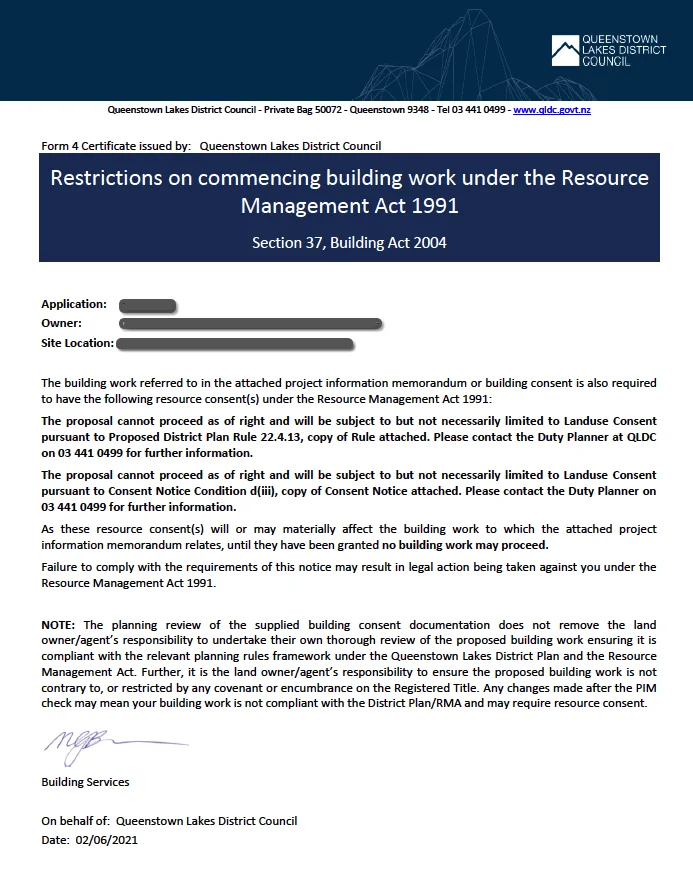

Here is the situation: you have applied to Queenstown Lakes District Council for a Building Consent or Project Information Memorandum (PIM) for your building project. Perhaps it is a new build, an extension, or even a garage. You have lodged your building consent, paid QLDC more money than you would have liked, and everything is going well. That is, before one of these arrives in your inbox:
"The proposal cannot proceed as of right... no building work may proceed... Failure to comply with the requirements of this notice may result in legal action being taken against you under the Resource Management Act 1991..."
Those words are enough to sour anyone's day. But it is often a fairly easy thing to resolve.
What Is a Section 37 Certificate?
When you apply to QLDC for either a Building Consent or a Project Information Memorandum, your application and plans are assessed by a Council Town Planner for compliance against the District Plan rules and other relevant rules (such as a consent notice registered on your title). If a non-compliance is found, it means you will require a resource consent in order to build what you have shown on the plans.
This certificate is issued under Section 37 of the Building Act 2004, which requires the Council to inform you that a resource consent is required under the Resource Management Act 1991 (planning permission). It is one of the key ways that the Building Act and Resource Management Act are linked together. The idea is that one arm of Council (Building Department) should not grant approvals or undertake inspections where a separate resource consent is required from another arm of Council (Planning Department) without any guarantee that it will be granted.
What Does a s37 Certificate Mean?
It means that no work can proceed until the matter is either resolved and a resource consent is no longer needed, or a resource consent is granted.
QLDC's current practice is that while a Building Consent can be granted with a s37 certificate in place, works cannot commence and Council will not allow you to book building inspections.
Our recommendation: Do not proceed with having the Building Consent granted while a s37 certificate is in place. Leave the application on hold if possible, as changes are sometimes required through the resource consent process. If your Building Consent has been granted and changes are then required to satisfy the resource consent, you will need to obtain a variation to the Building Consent, adding unnecessary time and cost.
Received a Section 37 Certificate?
Contact us for a free, no-obligation review of your situation. We will tell you exactly what your options are.
I've Received One of These: What Do I Do?
The first step is to find out exactly why the certificate was issued. The Council Planner who undertook the Planning Compliance Check will get in touch and advise why a resource consent is needed. Ask them questions: they are there to help.
From there, there are three main options to proceed:
Challenge the Assessment
It is rare that the Planner who issued the certificate is completely wrong, but in some circumstances there may be slightly different interpretations of the District Plan rules, or an existing resource consent has been historically granted but was not picked up during the Planner's assessment.
In this case, politely go back to the Planner and explain your reasoning. Sometimes this will resolve the situation and the s37 certificate will be removed. You are also welcome to contact us for a free, independent review of the situation.
Modify the Plans
Once you know exactly what the non-compliance is, it may be possible to resolve the matter by changing the design to comply. For example: slightly shifting the building away from a boundary, or slightly reducing the height of the building. There are potentially many ways in which a design can be modified to achieve compliance and remove the need for a resource consent.
Once you have amended plans, send them to the Council Planner and ask them to confirm that the amended design complies and that the s37 certificate will be lifted. Then send those plans to the Council Building Officer processing your Building Consent application.
Apply for Resource Consent
Sometimes it is not possible to modify the design to comply, either for practical reasons or personal preference, or a resource consent is required regardless for design control reasons (common in rural areas). In that case, a resource consent application is required.
Every resource consent is different: some are simple, some are not. Some require neighbours' approval, some do not. Contact us and we will take a free, no-obligation look at your situation and provide realistic advice. If a resource consent is required, we will also provide an estimate of costs, potential issues, and timeframes. We pride ourselves on providing honest, unfiltered advice up front.
It Is Resolved. Now What?
Once you have resolved the matter using one of the three options above, make sure you send the granted resource consent number (RMXXXXX), or written correspondence from the Planner confirming you no longer require a resource consent, to the Council Building Officer processing your application. They will arrange to have the s37 certificate formally removed and you can proceed with the rest of the Building Consent process.
In Conclusion
While a s37 certificate may appear daunting at first, they can often be resolved at no cost once you know the exact reason resource consent is required. The s37 process is a key link between the Building Act and Resource Management Act, and a key link between two different departments of Queenstown Lakes District Council.
Even if a resource consent is needed, they are a very common part of building and development. QLDC processes over 1,300 resource consents each year. With quality advice, realistic expectations, and a well-prepared application, there is a good chance of success.
Frequently Asked Questions
A Section 37 certificate is issued under Section 37 of the Building Act 2004 when QLDC's Building Department assesses your building consent or PIM application and finds that a resource consent is required under the Resource Management Act 1991. It notifies you that no building work may proceed until the resource consent issue is resolved.
QLDC's current practice allows a Building Consent to be granted with a s37 certificate in place, but work cannot commence and building inspections cannot be booked. We recommend leaving the Building Consent application on hold if possible, because changes required through the resource consent process may necessitate a variation to the Building Consent, adding unnecessary cost and time.
There are three main options: (1) Challenge the certificate if you believe the Council Planner's assessment is incorrect. (2) Modify your plans to remove the non-compliance, such as shifting a building away from a boundary or reducing its height. (3) Apply for a resource consent if the non-compliance cannot be resolved by changing the design.
Once the underlying resource consent issue is resolved, send the Council Building Officer the resource consent number or written confirmation from the Planner that consent is no longer required. They will then formally remove the s37 certificate and your building work can proceed.
Common reasons include a building being too close to a property boundary, exceeding height limits, not complying with a consent notice registered on the title, or not meeting design control rules that apply in certain zones. The Council Planner who issued the certificate will contact you to explain the specific reason.
Very common. QLDC processes over 1,300 resource consents each year. A resource consent is a normal part of building and development in the District. With quality advice, realistic expectations, and a well-prepared application, there is a good chance of a successful outcome.
The Building Act 2004 and Resource Management Act 1991 are linked so that QLDC's Building Department cannot approve building work where a separate resource consent from the Planning Department is required but not yet granted. The Section 37 process is the formal mechanism that enforces this link, ensuring building approvals and planning approvals are aligned.
Yes. We offer a free and no-obligation review of your situation and will provide realistic advice on the best option to move forward. If a resource consent is required, we will also provide an estimate of costs, potential issues, and timeframes. Contact us at info@pragmaticplanning.co.nz or call 021 104 3405.
Need Help With a Section 37 Certificate?
Free, no-obligation review of your situation. We will tell you exactly what your options are and what it is likely to cost.